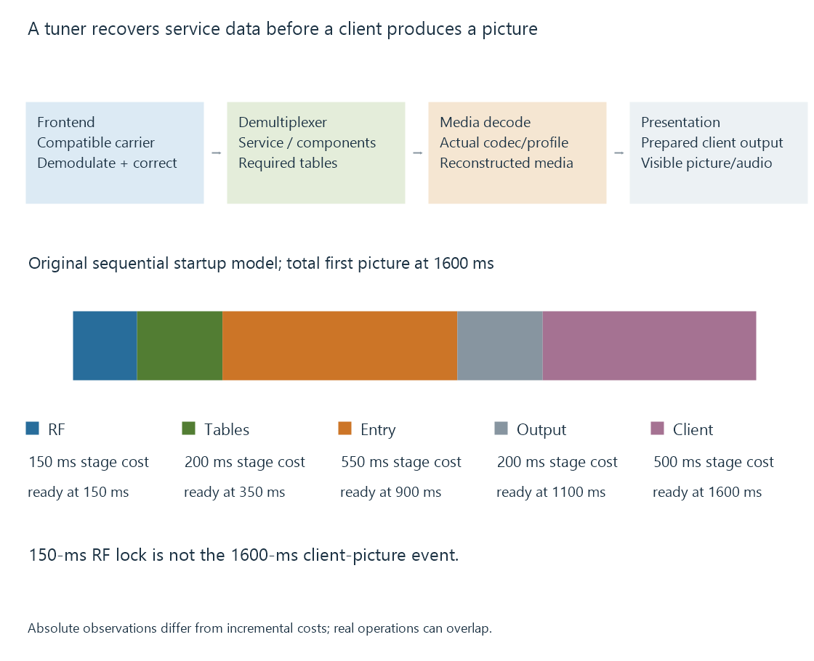

TV tuners and service acquisition
A TV tuner and frontend select and recover a compatible broadcast data path, while demultiplexing and media decoding perform later service and picture/audio operations.
A TV tuner selects a radio-frequency input path. Its associated demodulation/frontend arrangement recovers data under a supported transmission system.
That is different from decoding compressed video into pictures. A product can combine several functions, so its actual exposed interface matters more than the word “tuner” alone.
Acquisition, selection and decoding
| Function | Result |
|---|---|
| Tuning/front-end setup | Selected carrier and supported input configuration |
| Demodulation/error handling | Recovered broadcast data |
| Demultiplexing | Requested programme/component data |
| Media decoder | Reconstructed pictures or audio samples |
| Renderer/client delivery | Prepared presentation through the chosen route |

Linux’s frontend and demux interfaces provide concrete examples of this separation. A demux can filter MPEG transport packets by PID through supported hardware or software handling.
A tuner device can instead expose already selected service streams through another vendor/backend API. The function boundary should follow that interface.
RF lock can precede a usable first picture
Use an original absolute startup timeline:
| Model event | Time since request |
|---|---|
| Relevant RF lock achieved | 150 ms |
| Needed service tables available | 350 ms |
| First decodable video entry point available | 900 ms |
| Prepared output available | 1100 ms |
| Client presents the picture | 1600 ms |
The first picture occurs at 1600 ms, not at the 150-ms lock observation.
A compressed-video decoder can need initialization and a suitable reference/entry point. Tables and programme components also have to be identified. Client buffering adds another stage.
These times are invented and assume the displayed sequence. Real operations can overlap or use another arrangement; the table is not a tuner speed benchmark.
The exposed output changes the server’s task
A full multiplex output contains more than the viewer’s requested programme. The backend/application must select the corresponding components and retain required signaling.
A selected-service output has already performed some selection. The downstream route still needs to interpret its media and timing.
MPEG-TS programme tables develops the associations. Multiplexes explains the shared-carrier resource.
A device’s one-channel HTTP interface and its full-transport interface can therefore support different acquisition/sharing arrangements.
Hardware capability is not the whole application route
The driver and installed backend must expose the device under the server’s actual host context. A device recognized by one local application does not prove another process owns the same usable interface.
Other applications can also consume finite acquisition resources. Two physical tuners with one already occupied do not leave two free under an exclusive-use model.
Tuner concurrency develops that resource accounting.
Several frontends need their individual capabilities
A multi-tuner product can expose separate resources, and those resources need not all support identical delivery systems.
The relevant count is the number available for the requested configuration. A total socket or tuner number cannot be substituted for a particular standard’s usable acquisition count.
See Also
- Network TV tuners
- Tuner concurrency and shared acquisition
- TV signal quality and decoding margin
- MPEG-TS Program Tables: PAT and PMT